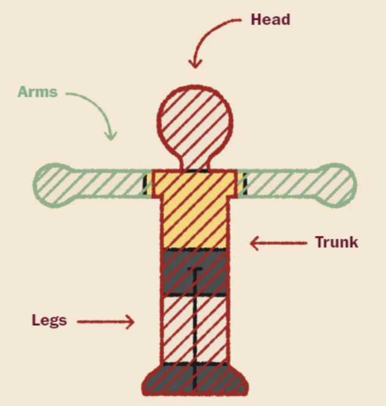

Offsides Explained
Welcome to the more in depth portion of learning on this platform. Start learning about the specifc rules of offsides in soccer!
In soccer, a player is offside if they are nearer to the opponent's goal line than both the ball and the second last opponent when the ball is played to them, unless they are in their own half of the field.

Offsides in action:
Key moment: interfering with the play at the moment when the ball is passed
Notable:
Only the team with possession can be offside and offside can only happen on the attacking part of the field.
Misunderstandings:
Can an attacking player stand offside?
Yes! Offside can only be called when an opponent is offside AND actively part of the play.
Complicated offsides:
A player is NOT offside if head/arms are in offside but head, body, and feet are not.
Offside is called when he plays the ball from offside position rebounding from a non-deliberate play (bouncing off post or saved)